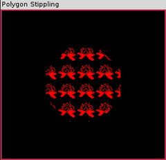

其他图元
Table of Contents
1 四条边的多边形：四边形
OpenGL的 GL_QUADS 图元用于绘制四边形。我们根据4个顶点绘制了一个四边形。注意这些多边形具有 顺时针方向的环绕 。使用四边形，必须记住一个重要规则：一个四边形的4个角 必须位于同一个平面中 （不存在弯曲的四边形）。
v1
/\
1 /- \- 2
/- \-
/- \-
v0 \- X v2
-\ -/
-\ -/
4 -\ -/ 3
--/
v3
1.1 四边形带
就像创建三角形带一样，可以使用 GL_QUAD_STRIP 图元指定一个连接的四边形带。下图显示了一个由6个顶点所组成的四边形带。注意这些四边形都保持了顺时针方向的环绕。
v1 2 v3 v1 v3 2 v5
+----------+ +----------+----------+
| | | | |
1 | | 3 | 1 | | 3
| | | | |
| | | | |
+----------+ +----------+----------+
v0 4 v2 V0 v2 4 v4
2 通过多边形
最后一种 OpenGL 图元是 GL_POLYGON ，我们可以用它绘制任意数量边的多边形。下图显示了一个由5个顶点组成的四边形。和四边形一样，多边形的所有顶点也必须位于同一个平面中。如果想越过这个规则，可以采用一种变通的方法，用 GL_TRIANGLE_FAN 代替 GL_POLYGON 。
v0 v1
+-----\
| \
| | v2
| |
+-------+
v4 v3
3 填充多边形
我们可以使用两种机制把一个模式应用到实心多边形：
- 纹理贴图，也就是把一幅图像贴到一个多边形的表面，这个将在后续讨论。
- 指定点画模式，就像我们在直线中所做的那样。
为了启用多边形点画，我们可以调用
glEnable(GL_POLYGON_STIPPLE);
然后调用
glPolygonStipple(pBitmap);
pBitmap是一个指定了一块数据区域的指针，这块数据区域包含了点画模式。随后，所有的多边形就使用 pBitmap(GLubyte*) 所指定的模式进行填充。这种模式类似于直线点画，只不过现在的缓冲区需要足够大，能够容纳一个32x32的位模式。同样，在这些位中，首先读入的是最高有效位（MSB），这与直线点画正好相反。
为了创建一个掩码来表示这个模式，我们自底向上一次存储一行。幸运的是，和直线点画模式不同， 数据在默认情况下的解释顺序和存储顺序相同 ，首先读取的是最高有效位。然后每个字节从左向右读取并存储在一个GLubyte数组中。这个数组必须足够大，能够容纳32行每行4个字节的数据。
3.1 示例代码
CANNOT INCLUDE FILE ./program/opengl/pstipple.cpp
3.2 输出

PSTIPPLE程序的输出
4 多边形的创建规则
在使用多边形来创建一个复杂的表面时，需要记住两个重要的规则1：
- 所有的多边形 必须是平面 的，也就是说，多边形的所有顶点必须位于同一个平面中。在空间中，多边形不能扭曲或弯曲。
- 多边形的边 必须不相交 ，并且多边形 必须是凸的 。一个多边形如果它的任何两条边相交，那么这个多边形就是相交的。凸意味着多边形不能出现内陷。
5 细分和边界
尽管OpenGL只能绘制凸多边形，但我们仍然能够采用一种方法创建非凸多边形，那就是把两个或更多个图多边形排列到一起。但这样会产生不希望的边界。
OpenGL提供了一个特殊的标志，称为edge标志，用于处理这些边的问题。当指定一个顶点列表时，通过设置和清除edge标志，可以通知 OpenGL 哪些线段属于边界线（围绕形状边缘的直线），哪些线段不属于边界线（形状内部的直线应该不可见）。 glEdgeFlag 函数接受一个参数，来把edge标志设置为True或False。当这个函数设置为True时，接下来的所有顶点都将作为多边形边界线的起点。
5.1 代码示例
CANNOT INCLUDE FILE ./program/opengl/star.cpp
5.2 分析
布尔型变量 bEdgeFlag可以通过一个菜单项予以打开或关闭，使三角形的边出现或消失。
Footnotes:
1 加入这样的限制，使得OpenGL可以用一些非常快速的算法对多边形进行渲染。